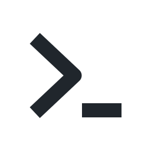
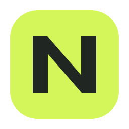
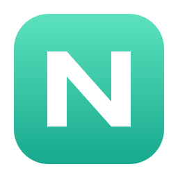
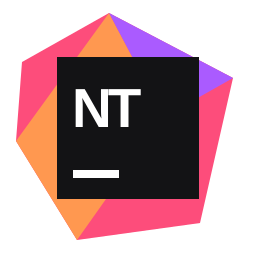
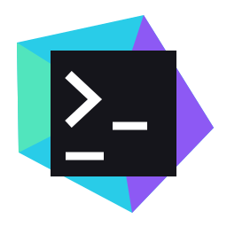
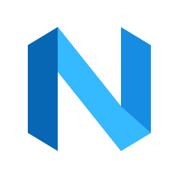
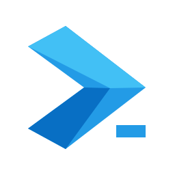
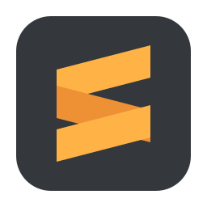
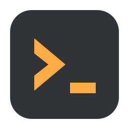

五种视觉语言，每种两款。去掉工业机身，比较轮廓、颜色和小尺寸辨识度。点击喜欢的方案，然后在聊天里告诉我编号。

黑白提示符，去掉容器，只留下终端本身。

实心几何 N；单色、有分量，适合小尺寸。
柔和圆角方形，白色终端符号与电蓝色。

薄荷绿色与白色叠片，以留白表达 N。

明亮色块穿插黑色标签，用 NT 建立品牌识别。

青蓝与紫色构成斜向光谱，黑色核心保持稳定。

开放的蓝色折带构成 N，轮廓轻盈，没有底板。

将提示箭头变成闭合折带，强调轮廓辨识。

深灰底板和暖橙色折片，温暖、直接。

暖橙色块与锐利提示符，更明确地表达 terminal。